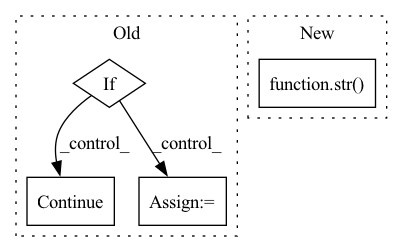

Pattern ID :3971
Before Change
self.tim_max = time_code
current_tim.append(time_code)
// 完成当前轨迹的编码，下面进行输入的形成
if index == 0:
// 因为要历史轨迹特征，所以第一条轨迹是不能构成模型输入的
if self.history_type == "splice":
history_loc += current_loc
history_tim += current_tim
else:
history_loc.append(current_loc)
history_tim.append(current_tim)
continue
trace = []
target = current_loc[-1]
target_tim = current_tim[-1]
current_loc = current_loc[:-1]
current_tim = current_tim[:-1]
trace.append(history_loc)
trace.append(history_tim)
trace.append(current_loc)
trace.append(current_tim)
trace.append(target)
trace.append(target_tim)
trace.append(uid)
encoded_trajectories.append(trace)
if self.history_type == "splice":
history_loc += current_loc
history_tim += current_tim
else:
history_loc.append(current_loc)After Change
now_time = parse_time(point[2])
if loc not in self.location2id:
self.location2id[loc] = self.loc_id
self.id2locid[str( self.loc_id) ] = loc
self.loc_id += 1
current_loc.append(self.location2id[loc])
time_code = self._time_encode(now_time)In pattern: SUPERPATTERN
Frequency: 3
Non-data size: 4
Instances Fragment ID: 14915731
Project Name: libcity/bigscity-libcity
Commit Name: d5676546c95422958339c2a53651f6a0aa373a31
Time: 2022-03-07
Author: 842595644@qq.com
File Name: libcity/data/dataset/trajectory_encoder/cara_encoder.py
M Class Name: CARATrajectoryEncoder
N Class Name: CARATrajectoryEncoder
M Method Name: encode(4)
N Method Name: encode(3)
M Parent Class: AbstractTrajectoryEncoder
N Parent Class: AbstractTrajectoryEncoder
M File Name: libcity/data/dataset/trajectory_encoder/cara_encoder.py
N File Name: libcity/data/dataset/trajectory_encoder/cara_encoder.py
M Start Line: 59
M End Line: 108
N Start Line: 31
N End Line: 58
Before Change
def allow_listed(schema, allow_list):
for item in allow_list:
if item[1] < datetime.date.today():
continue
regexp = re.compile(item[0])
if regexp.search(schema.name):
if len(item) > 2:
// if arguments regex is present, use itAfter Change
if item[0].search(str(schema)):
if len(item) > 2 and item[2] is not None:
// if arguments regex is present, use it
return bool(item[2].search(str( schema) ))
return True
return False
Fragment ID: 14915733
Project Name: pytorch/pytorch
Commit Name: de77c6a0eb956f8cbb41bcb05dfe4a78e4b8c07c
Time: 2021-08-04
Author: rongr@fb.com
File Name: test/backward_compatibility/check_backward_compatibility.py
M Class Name: AnonimousClass
N Class Name: AnonimousClass
M Method Name: allow_listed(1)
N Method Name: allow_listed(2)
M Parent Class:
N Parent Class:
M File Name: test/backward_compatibility/check_backward_compatibility.py
N File Name: test/backward_compatibility/check_backward_compatibility.py
M Start Line: 117
M End Line: 126
N Start Line: 126
N End Line: 130
Before Change
cost.backward()
optimizer.step()
if not np.isnan(cost.__float__()):
train_cost_sum += cost.__float__()
train_neg_cost_sum += rmse_cost.__float__()
train_stft_cost_sum += stft_cost.__float__()
train_avg_cost = train_cost_sum / (idx + 1)
train_neg_avg_cost = train_neg_cost_sum / (idx + 1)
train_stft_avg_cost = train_stft_cost_sum / (idx + 1)
train_epoch.set_postfix(rmse=train_neg_avg_cost, stft=train_stft_avg_cost, tot=train_avg_cost)
else:
print("nan error")
continue
// plt.plot()
// plt.plot(d_out.detach().cpu().numpy(), label="d_out")
// plt.plot(d_fuse1.detach().cpu().numpy(), label="d_fuse1")
// plt.plot(d_fuse2.detach().cpu().numpy(), label="d_fuse2")After Change
total_cost = np.sum(avg_cost_list)
temp = {}
for i in range(len(loss)):
temp[(str( loss[i])) [:-2]] = (round(avg_cost_list[i], 3))
train_epoch.set_postfix(losses=temp, tot=total_cost)
cost.backward()
optimizer.step() Fragment ID: 14915723
Project Name: tvs-ai/pytorch_rppgs
Commit Name: 79fa5ea2fc22ff76197fc5272382574b54608880
Time: 2023-01-02
Author: forownsake@gmail.com
File Name: vid2bp/train.py
M Class Name: AnonimousClass
N Class Name: AnonimousClass
M Method Name: train(7)
N Method Name: train(7)
M Parent Class:
N Parent Class:
M File Name: vid2bp/train.py
N File Name: vid2bp/train.py
M Start Line: 10
M End Line: 67
N Start Line: 10
N End Line: 40